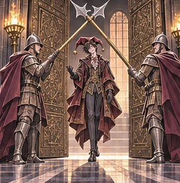

1-2막 · 황제의 궁정

파우스트가 아침을 맞은 골짜기에서 이야기는 황제의 궁정으로 옮겨 갔다. 나라의 중요한 일을 맡은 대신들이 알현실에 모여 있었다. 붉은 장막 앞의 왕좌는 아직 비어 있었다. 나팔 소리가 울리자 사람들은 말을 멈추고 입구를 돌아봤다.
독일어 원문 · 한국어 번역
KAISERLICHE PFALZ
SAAL DES THRONES
Staatsrat in Erwartung des Kaisers.
Trompeten.
황제의 궁정. 알현실. 국정을 의논하는 대신들이 황제를 기다린다. 나팔 소리.

화려하게 차려입은 궁정 사람들이 먼저 들어왔다. 그 뒤로 황제가 왕좌에 올라앉았다. 오른편에는 점성술사가 섰다. 별의 움직임을 보고 앞으로 좋은 일이 생길지 나쁜 일이 생길지 풀이해 주는 사람이었다. 황제는 그를 확인하고 나서 곁의 빈자리를 살폈다.
독일어 원문 · 한국어 번역
Hofgesinde aller Art, prächtig gekleidet, tritt vor.
Der Kaiser gelangt auf den Thron, zu seiner Rechten
der Astrolog.
온갖 궁정 사람들이 화려하게 차려입고 앞으로 나온다. 황제가 왕좌에 오르고, 오른편에는 점성술사가 자리한다.
“멀리서 온 사람도 있군. 다들 반갑네.” 황제가 모인 사람들에게 인사했다. 그러더니 빈자리를 가리켰다. “그런데 광대는 어디 갔지? 점성술사는 와 있는데.” 궁정 광대는 황제 곁에서 익살스러운 말과 행동으로 웃음을 주던 사람이었다.
독일어 원문 · 한국어 번역
KAISER.
Ich grüße die Getreuen, Lieben,
Versammelt aus der Näh und Weite.--
Den Weisen seh' ich mir zur Seite,
Allein wo ist der Narr geblieben?
황제. 가까운 곳과 먼 곳에서 모인 충직하고 사랑하는 이들에게 인사를 전한다. 내 곁에 현자는 보이는데, 광대는 어디로 갔느냐?
왕좌 가까이 있던 젊은 신하가 앞으로 나왔다. “폐하의 망토 자락 바로 뒤에서 계단에 쓰러졌습니다. 몸집이 워낙 커서 사람들이 들어서 옮겼고요.” 신하는 잠깐 말을 멈췄다가 덧붙였다. “죽은 건지 술에 취한 건지는 모르겠습니다.”
독일어 원문 · 한국어 번역
JUNKER.
Gleich hinter deiner Mantelschleppe
Stürzt' er zusammen auf der Treppe,
Man trug hinweg das Fettgewicht;
Tot oder trunken, weiß man nicht.
젊은 궁정 신하. 폐하의 망토 자락 바로 뒤에서 그가 계단에 쓰러졌습니다. 그 육중한 몸을 사람들이 들어 옮겼습니다. 죽었는지 술에 취했는지는 모릅니다.

옆에 있던 두 번째 신하가 입구 쪽을 가리켰다. “그런데 그 사람이 나가자마자 다른 사람이 끼어들었습니다. 어찌나 빨리 자리를 차지하려 드는지.” 그는 다가오는 남자의 차림을 훑었다. “옷은 굉장히 화려한데 좀 기묘합니다. 다들 보고 멈칫하더군요.”
독일어 원문 · 한국어 번역
ZWEITER JUNKER.
Sogleich mit wunderbarer Schnelle
Drängt sich ein andrer an die Stelle.
Gar köstlich ist er aufgeputzt,두 번째 젊은 궁정 신하. 곧바로 다른 자가 놀라울 정도로 빠르게 그 자리를 비집고 들어옵니다. 옷차림은 무척 화려하나 우스꽝스러워 다들 멈칫합니다.

“경비대가 문에서 막았습니다. 도끼창을 이렇게 엇갈려서요.” 두 번째 신하가 두 팔을 교차했다. 그러다 왕좌 앞으로 다가온 남자를 보고 손을 내렸다. “아니, 벌써 저기까지 왔군요!” 사람들의 시선이 새 광대에게 쏠렸다.
독일어 원문 · 한국어 번역
Doch fratzenhaft, daß jeder stutzt.
Die Wache hält ihm an der Schwelle
Kreuzweis die Hellebarden vor--
Da ist er doch, der kühne Tor!
문턱에서 경비병들이 도끼창을 엇갈려 그를 막습니다. 그런데도 저기 있군요, 저 대담한 광대가!

그 남자는 메피스토였다. 파우스트와 계약한 악마가 이번에는 광대 차림으로 황제 앞에 나타난 것이다. 메피스토는 무릎을 꿇고 황제를 올려다봤다. 무작정 자리를 달라기보다 먼저 흥미를 끌어 볼 생각이었다.
“폐하, 욕을 먹으면서도 늘 환영받는 건 뭘까요? 모두 기다리면서도 막상 나타나면 쫓아내는 건요?”
독일어 원문 · 한국어 번역
MEPHISTOPHELES:
am Throne kniend.
Was ist verwünscht und stets willkommen?
Was ist ersehnt und stets verjagt?메피스토가 왕좌 앞에 무릎을 꿇는다. 저주받으면서도 늘 환영받는 것은 무엇입니까? 기다려지면서도 늘 쫓겨나는 것은 무엇입니까?

메피스토는 곧바로 질문을 더했다. “사람들이 늘 편을 들어 주는 건 뭘까요? 심하게 꾸짖고 고발하는 건요? 직접 부르시면 안 되는 사람은 누굴까요? 그런데도 이름만 들으면 모두 반가워하는 사람은요?”
그는 왕좌의 계단을 가리켰다. “지금 폐하 앞으로 다가온 건 누구일까요? 스스로 자취를 감춘 건요?” 답을 정해 주지 않는 질문에 사람들은 새 광대와 빈자리를 번갈아 봤다.
독일어 원문 · 한국어 번역
Was immerfort in Schutz genommen?
Was hart gescholten und verklagt?
Wen darfst du nicht herbeiberufen?
Wen höret jeder gern genannt?
Was naht sich deines Thrones Stufen?
Was hat sich selbst hinweggebannt?늘 두둔받는 것은 무엇입니까? 심하게 꾸짖고 고발하는 것은 무엇입니까? 직접 불러들여서는 안 되는 이는 누구입니까? 누구나 그 이름을 듣기 좋아하는 이는 누구입니까? 왕좌의 계단에 다가온 것은 무엇입니까? 스스로 자취를 감춘 것은 무엇입니까?
“잠깐, 그쯤 해 둬.” 황제가 손을 들었다. “여기서 수수께끼까지 풀어야겠나? 골치 아픈 문제는 저 대신들이 충분히 가져왔을 거야. 네가 그거나 풀어 줘. 그 답은 나도 듣고 싶군.”
황제는 옆자리를 내주었다. “예전 광대는 멀리 가 버린 모양이니 네가 맡아. 이리 와서 앉아.” 메피스토는 바라던 대로 황제 곁으로 올라갔다.
독일어 원문 · 한국어 번역
KAISER:
Für diesmal spare deine Worte!
Hier sind die Rätsel nicht am Orte,
Das ist die Sache dieser Herrn.--
Da löse du! das hört' ich gern.
Mein alter Narr ging, fürcht' ich, weit ins Weite;
Nimm seinen Platz und komm an meine Seite.황제. 이번엔 말 좀 아껴라! 여기서 수수께끼를 낼 때가 아니다. 그건 이분들이 다룰 일이니, 네가 한번 풀어 봐라! 그 답은 듣고 싶구나. 예전 광대는 아무래도 멀리 떠난 듯하다. 네가 그 자리를 맡고 내 곁으로 와라.

“새 광대라니, 골칫거리가 하나 더 늘었네.” 가까운 신하가 작게 말했다. 옆 사람이 물었다. “어디서 온 사람이야? 어떻게 들어왔지?”
뒤에서 다른 목소리가 끼어들었다. “먼저 있던 광대는 쓰러졌으니 끝났군. 전에는 술통처럼 뚱뚱하더니 이번에는 나뭇조각처럼 말랐어.” 메피스토는 수군거리는 소리를 들어도 자리를 내놓을 생각이 없었다.
독일어 원문 · 한국어 번역
GEMURMEL DER MENGE:
Ein neuer Narr--Zu neuer Pein--
Wo kommt er her?--Wie kam er ein?--
Der alte fiel--Der hat vertan--
Es war ein Faß--Nun ist's ein Span--사람들이 웅성거린다. 새 광대라니, 새 골칫거리가 되겠군. 어디서 온 거지? 어떻게 들어왔어? 옛 광대는 쓰러졌고, 이제 끝장이군. 전에는 술통이더니 이번에는 나뭇조각이네.

황제가 대신들을 향해 다시 인사했다. “가까이서도 멀리서도 잘들 왔네. 별도 좋다니 우리한테 행운이 있을 거야.” 그는 축제를 기대하고 있었다. “지금은 걱정 좀 내려놓고 가면 쓰고 즐길 때 아닌가? 꼭 이렇게 모여서 머리를 싸매야겠어?”
하지만 대신들은 물러서지 않았다. 황제가 결국 자세를 고쳐 앉았다. “좋아. 달리 방법이 없다니, 모인 김에 해 보지.”
독일어 원문 · 한국어 번역
KAISER:
Und also, ihr Getreuen, Lieben,
Willkommen aus der Näh' und Ferne!
Ihr sammelt euch mit günstigem Sterne,
Da droben ist uns Glück und Heil geschrieben.
Doch sagt, warum in diesen Tagen,
Wo wir der Sorgen uns entschlagen,
Schönbärte mummenschänzlich tragen
Und Heitres nur genießen wollten,
Warum wir uns ratschlagend quälen sollten?
Doch weil ihr meint, es ging' nicht anders an,
Geschehen ist's, so sei's getan.황제. 가까이서도 멀리서도 온 충직하고 사랑하는 이들을 환영한다. 길한 별 아래 모였으니 하늘에는 행운과 복이 적혀 있다. 그런데 근심을 내려놓고 우스꽝스러운 가면을 쓰고 즐기려던 이때, 어째서 머리를 싸매고 의논해야 하는가? 달리 도리가 없다고들 하니, 기왕 모인 김에 해 보자.

국정을 맡은 재상이 앞으로 나왔다. 황제가 듣고 싶어 하지 않는 이야기라도 꺼내야 했다. “폐하, 백성이 가장 바라는 건 억울한 일을 당했을 때 제대로 판단해 주는 법입니다. 그 정의를 세울 수 있는 분은 폐하십니다.”
재상은 잠시 왕좌를 바라봤다. “그런데 지금은 온 나라가 열병에 걸린 것 같습니다. 잘못을 내버려 두면 더 큰 잘못이 생깁니다. 머리가 좋고 마음이 착하고 기꺼이 일하려는 사람이 있어도, 이대로라면 무슨 일을 할 수 있겠습니까?”
독일어 원문 · 한국어 번역
KANZLER:
Die höchste Tugend, wie ein Heiligenschein,
Umgibt des Kaisers Haupt; nur er allein
Vermag sie gültig auszuüben:
Gerechtigkeit!--Was alle Menschen lieben,
Was alle fordern, wünschen, schwer entbehren,
Es liegt an ihm, dem Volk es zu gewähren.
Doch ach! Was hilft dem Menschengeist Verstand,
Dem Herzen Güte, Willigkeit der Hand,
Wenn's fieberhaft durchaus im Staate wütet
Und übel sich in übeln überbrütet?재상. 가장 높은 덕목이 성스러운 빛처럼 황제의 머리 위를 감쌉니다. 오직 황제만이 그것을 제대로 펼칠 수 있습니다. 바로 정의입니다. 모두가 사랑하고 요구하며 바라 마지않는 정의를 백성에게 내리는 일은 폐하에게 달려 있습니다. 그러나 나라 전체가 열병처럼 들끓고 잘못이 또 다른 잘못을 낳는다면, 지혜와 선한 마음과 기꺼이 일하려는 손이 무슨 소용이겠습니까?

“여기 높은 궁전에서는 잘 보이지 않으실 겁니다. 하지만 제국 곳곳에서는 법을 어기는 사람이 법 위에 서 있습니다.” 재상이 말했다. “누구는 남의 가축 떼를 끌고 가고, 누구는 여자를 납치합니다. 교회의 성배와 십자가, 촛대까지 빼앗아 갑니다.”
재상은 그 뒤의 일이 더 심각하다고 여겼다. “그런 짓을 하고도 몇 해씩 멀쩡하게 돌아다닙니다. 심지어 자랑까지 합니다.” 그림 속 약탈은 그가 보고하는 제국의 사정을 보여 주고 있었다.
독일어 원문 · 한국어 번역
Wer schaut hinab von diesem hohen Raum
Ins weite Reich, ihm scheint's ein schwerer Traum,
Wo Mißgestalt in Mißgestalten schaltet,
Das Ungesetz gesetzlich überwaltet
Und eine Welt des Irrtums sich entfaltet.
Der raubt sich Herden, der ein Weib,
Kelch, Kreuz und Leuchter vom Altare,
Berühmt sich dessen manche Jahre
Mit heiler Haut, mit unverletztem Leib.이 높은 곳에서 넓은 제국을 내려다보면 무거운 악몽과도 같습니다. 온갖 흉측한 일이 판을 치고, 무법이 법인 양 군림하며, 잘못된 세상이 펼쳐집니다. 누구는 가축 떼를, 누구는 여인을, 또 누구는 제단에서 성배와 십자가와 촛대를 빼앗습니다. 그러고도 다친 곳 하나 없이 몇 해씩 그 일을 자랑합니다.

“당한 사람들은 법정으로 몰려옵니다. 재판관은 높은 자리에 앉아 위세를 부리고, 아래에서는 고함이 점점 커집니다.” 재상은 손으로 사람들 사이를 가르듯 했다. “죄를 지은 사람은 큰소리를 치고, 함께 죄지은 사람들이 그 옆을 지켜 줍니다.”
“그럼 억울한 사람은요?” 재상이 말을 이었다. “자기 혼자 결백을 설명해야 합니다. 그러다가 도리어 그 사람이 유죄라는 말을 듣습니다.”
독일어 원문 · 한국어 번역
Jetzt drängen Kläger sich zur Halle,
Der Richter prunkt auf hohem Pfühl,
Indessen wogt in grimmigem Schwalle
Des Aufruhrs wachsendes Gewühl.
Der darf auf Schand' und Frevel pochen,
Der auf Mitschuldigste sich stützt,
Und: Schuldig! hörst du ausgesprochen,
Wo Unschuld nur sich selber schützt.이제 억울함을 호소하는 이들이 법정에 몰려듭니다. 재판관은 높은 자리에 앉아 위세를 부리고, 그 사이 격렬한 소요는 점점 커집니다. 누구는 저지른 파렴치한 짓으로 큰소리치고, 누구는 함께 죄를 지은 자들에게 기대지요. 죄 없는 사람이 자신을 지키려는 것뿐인 자리에서 ‘유죄!’라는 소리가 들립니다.

“이러면 지켜야 할 법과 질서가 무너집니다. 무엇이 옳은지 판단하는 마음이 어떻게 남겠습니까?” 재상이 물었다. “처음에는 좋은 뜻을 품었던 사람도 아첨을 듣고 돈을 받다 보면 넘어갑니다.”
그는 말을 낮췄다. “죄를 지어도 벌할 수 없는 재판관은 끝내 범죄자와 한편이 됩니다.” 누가 누구의 잘못을 가려 줄지 알 수 없게 되는 것이었다.
독일어 원문 · 한국어 번역
So will sich alle Welt zerstückeln,
Vernichtigen, was sich gebührt;
Wie soll sich da der Sinn entwickeln,
Der einzig uns zum Rechten führt?
Zuletzt ein wohlgesinnter Mann
Neigt sich dem Schmeichler, dem Bestecher,
Ein Richter, der nicht strafen kann,
Gesellt sich endlich zum Verbrecher.그리하여 세상은 갈기갈기 찢어지고 지켜야 할 것은 무너집니다. 우리를 올바른 길로 이끌 분별이 어찌 자라겠습니까? 마침내 뜻이 선한 사람도 아첨꾼과 뇌물 주는 자에게 넘어가고, 죄에 벌을 줄 수 없는 재판관은 끝내 범죄자의 편이 됩니다.

재상은 황제의 표정을 살폈다. “나라 사정을 너무 어둡게 말씀드렸습니다. 저도 이런 일은 차라리 덮어 버리고 싶습니다. 하지만 결정을 피할 수는 없습니다.”
“모두 남의 것을 빼앗고 모두 피해를 입게 되면, 폐하의 권위도 안전하지 않습니다.” 황제에게 직접 닥칠 문제라고 말하며 재상은 보고를 마쳤다.
독일어 원문 · 한국어 번역
Ich malte schwarz, doch dichtern Flor
Zög' ich dem Bilde lieber vor.
Entschlüsse sind nicht zu vermeiden;
Wenn alle schädigen, alle leiden,
Geht selbst die Majestät zu Raub.어둡게 그려 말씀드렸습니다만, 차라리 더 두꺼운 천으로 이 그림을 덮어 버리고 싶습니다. 이제 결단을 피할 수 없습니다. 모두가 서로에게 해를 끼쳐 모두가 고통받으면 황제의 권위조차 약탈당합니다.

다음으로 군대를 지휘하는 총사령관이 나섰다. 재상이 법의 문제를 말했다면 그는 현장에서 명령이 통하지 않는 문제를 떠안고 있었다. “폐하, 요즘은 저마다 남을 공격하고 자기도 공격당합니다. 멈추라는 명령에는 아무도 귀를 기울이지 않습니다.”
독일어 원문 · 한국어 번역
HEERMEISTER:
Wie tobt's in diesen wilden Tagen!
Ein jeder schlägt und wird erschlagen,
Und fürs Kommando bleibt man taub.총사령관. 이 어지러운 나날에 얼마나 거칠게 날뛰는지요! 저마다 남을 치고 또 쓰러지며, 명령에는 귀를 닫습니다.

총사령관이 말을 이었다. “도시 사람들은 성벽 뒤에서 버팁니다. 기사들은 바위산 위 성채에 틀어박혔고요. 우리가 먼저 지쳐서 물러나길 기다리는 겁니다.” 모두 자기 병력과 물자를 안에 쌓아 두고 제국의 요구를 버티고 있었다.
독일어 원문 · 한국어 번역
Der Bürger hinter seinen Mauern,
Der Ritter auf dem Felsennest
Verschwuren sich, uns auszudauern,
Und halten ihre Kräfte fest.시민은 성벽 뒤에, 기사는 바위 위 요새에 틀어박혔습니다. 우리보다 오래 버티겠다고 굳게 맹세하고 제 힘을 비축합니다.

“용병들은 봉급부터 달라고 합니다.” 총사령관이 말했다. 용병은 돈을 받고 싸우는 병사들이었다. “참을 만큼 참았다고 거칠게 나오고 있습니다. 그나마 받을 돈이 남아 있으니까 여기 있는 겁니다. 우리가 빚진 게 없으면 벌써 전부 떠났을 겁니다.”
독일어 원문 · 한국어 번역
Der Mietsoldat wird ungeduldig,
Mit Ungestüm verlangt er seinen Lohn,
Und wären wir ihm nichts mehr schuldig,
Er liefe ganz und gar davon.용병은 참을성을 잃고 거칠게 봉급을 요구합니다. 우리가 줄 돈이 남아 있지 않다면 벌써 아주 달아났을 것입니다.

“약탈을 금지하려고 해도 벌집을 건드린 것처럼 들고일어납니다. 자기들이 지키라고 보낸 땅을 자기들이 털고 있습니다.” 총사령관은 굳은 얼굴로 보고했다. “그렇게 날뛰게 내버려 둔 사이 벌써 세상의 절반이 망가졌습니다.”
밖의 왕들이 도와줄 가능성도 크지 않았다. “아직 왕들은 있지만 누구도 자기 일이라고 생각하지 않습니다.”
독일어 원문 · 한국어 번역
Verbiete wer, was alle wollten,
Der hat ins Wespennest gestört;
Das Reich, das sie beschützen sollten,
Es liegt geplündert und verheert.
Man läßt ihr Toben wütend hausen,
Schon ist die halbe Welt vertan;
Es sind noch Könige da draußen,
Doch keiner denkt, es ging' ihn irgend an.
모두가 하고 싶어 하는 일을 누가 금하기라도 하면 벌집을 건드린 꼴입니다. 그들이 지켜야 할 제국은 약탈당하고 황폐해졌습니다. 그들이 마음껏 난동을 부리게 내버려 두니 벌써 세상의 절반이 망했습니다. 밖에는 아직 왕들이 있지만 누구도 자기 일이라고 생각하지 않습니다.

돈을 맡은 재무관이 그 말을 받았다. “동맹국을 믿고 기다릴 수도 없습니다. 지원금을 보내 주겠다고 약속했지만 한 푼도 들어오지 않습니다.”
물길은 연결돼 있다는데 관 끝에서는 물이 안 나오는 셈이었다. 약속이 있다는 사실만으로 군대의 봉급을 줄 수는 없었다.
독일어 원문 · 한국어 번역
SCHATZMEISTER:
Wer wird auf Bundsgenossen pochen!
Subsidien, die man uns versprochen,
Wie Röhrenwasser bleiben aus.재무관. 누가 동맹국을 믿겠습니까! 약속한 지원금은 관에서 나와야 할 물처럼 끊겨 버렸습니다.

“폐하의 땅 안에서도 마찬가지입니다.” 재무관이 말했다. “가는 곳마다 새 주인이 들어앉았습니다. 제멋대로 살겠다고 하는데 우리는 보고만 있어야 합니다.”
황제가 다스리는 땅이라도 마음대로 명령할 수 있는 형편이 아니었다. “권리를 너무 많이 내줬습니다. 이제 우리에게 남은 권리가 없을 정도입니다.”
독일어 원문 · 한국어 번역
Auch, Herr, in deinen weiten Staaten
An wen ist der Besitz geraten?
Wohin man kommt, da hält ein Neuer Haus,
Und unabhängig will er leben,
Zusehen muß man, wie er's treibt;
Wir haben so viel Rechte hingegeben,
Daß uns auf nichts ein Recht mehr übrigbleibt.폐하의 드넓은 영토에서도 재산이 누구 손에 넘어갔습니까? 가는 곳마다 새 주인이 들어앉아 제멋대로 독립해 살려 합니다. 우리는 그들이 하는 짓을 지켜봐야만 합니다. 권리를 너무 많이 내주어 이제 우리에게는 아무 권리도 남지 않았습니다.
재무관은 편을 나누어 다투는 사람들에게도 기대를 걸지 않았다. “우리를 칭찬하든 욕하든, 좋아하든 싫어하든 지금은 아무 소용이 없습니다. 정작 도와줄 때는 다 숨어 버립니다.”
황제 편인 기벨린파도, 교황 편인 겔프파도 그랬다. 평소에는 서로 맞서던 두 편이 이제는 자기 일부터 챙겼다. “누가 이웃을 돕겠습니까? 다들 자기 사정으로 바쁩니다.”
독일어 원문 · 한국어 번역
Auch auf Parteien, wie sie heißen,
Ist heutzutage kein Verlaß;
Sie mögen schelten oder preisen,
Gleichgültig wurden Lieb' und Haß.
Die Ghibellinen wie die Guelfen
Verbergen sich, um auszuruhn;
Wer jetzt will seinem Nachbar helfen?
Ein jeder hat für sich zu tun.오늘날에는 이름이 무엇이든 어느 파벌도 믿을 수 없습니다. 그들이 비난하든 칭찬하든, 미워하든 좋아하든 이제 다 소용없습니다. 기벨린파도 겔프파도 숨어 쉽니다. 지금 누가 이웃을 돕겠습니까? 저마다 제 일로 바쁩니다.

“돈이 있는 곳은 문을 단단히 잠가 버렸습니다. 저마다 자기 몫을 긁어모으고 있습니다.” 재무관이 보고를 맺었다. “그런데 우리 금고는 비어 있습니다.”
황제가 돈을 쓰라고 명령하더라도 재무관에게는 꺼내 줄 돈이 없었다.
독일어 원문 · 한국어 번역
Die Goldespforten sind verrammelt,
Ein jeder kratzt und scharrt und sammelt,
Und unsre Kassen bleiben leer.
금고 문은 단단히 막혔습니다. 저마다 긁고 파서 자기 몫을 모으는데, 우리 금고는 비어 있습니다.

이번에는 궁정의 식사와 살림을 맡은 대신이 나왔다. “저도 큰일입니다. 날마다 아끼려고 하는데 날마다 더 많이 듭니다.”
그는 부엌에 들어오는 것부터 설명했다. “멧돼지, 사슴, 산토끼, 노루, 칠면조, 닭, 거위, 오리는 아직 들어옵니다. 정해진 몫의 물자와 수입도 그럭저럭 받고 있습니다. 요리사들은 당장 부족한 게 없다고 느끼겠지요.” 음식이 있다고 살림 전체가 넉넉한 것은 아니었다.
독일어 원문 · 한국어 번역
MARSCHALK:
Welch Unheil muß auch ich erfahren!
Wir wollen alle Tage sparen
Und brauchen alle Tage mehr,
Und täglich wächst mir neue Pein.
Den Köchen tut kein Mangel wehe;
Wildschweine, Hirsche, Hasen, Rehe,
Welschhühner, Hühner, Gäns' und Enten,
Die Deputate, sichre Renten,
Sie gehen noch so ziemlich ein.궁정 살림을 맡은 대신. 제게도 재앙입니다! 날마다 아끼려 하지만 날마다 더 많이 필요해 근심이 늘어납니다. 요리사들에게는 부족한 것이 없습니다. 멧돼지, 사슴, 산토끼, 노루, 칠면조, 닭, 거위, 오리, 정기 현물과 확실한 수입은 아직 그럭저럭 들어옵니다.

“하지만 포도주가 떨어집니다.” 대신이 덧붙였다. “전에는 좋은 산지에서 좋은 해에 담근 술을 지하실에 통마다 쌓아 뒀습니다. 그런데 귀한 분들이 끝도 없이 마시니 마지막 한 방울까지 없어집니다.”
빈 통을 쌓아 놓아도 다음 잔치에 내놓을 술은 생기지 않았다.
독일어 원문 · 한국어 번역
Jedoch am Ende fehlt's an Wein.
Wenn sonst im Keller Faß an Faß sich häufte,
Der besten Berg' und Jahresläufte,
So schlürft unendliches Gesäufte
Der edlen Herrn den letzten Tropfen aus.하지만 끝내 포도주가 모자랍니다. 전에는 좋은 산지에서 좋은 해에 난 술을 통마다 지하실에 쌓아 두었건만, 귀족들의 끝없는 술판이 마지막 한 방울까지 마셔 버립니다.

“시의회의 저장고에 있던 술까지 내오고 있습니다. 큰 잔을 집어 들고, 그것도 모자라 사발로 마십니다.” 대신은 연회장의 낭비를 설명했다. 식탁 아래에는 떨어진 음식이 남았다. 잔치는 끝나도, 이미 들인 돈을 돌려받을 수는 없었다.
독일어 원문 · 한국어 번역
Der Stadtrat muß sein Lager auch verzapfen,
Man greift zu Humpen, greift zu Napfen,
Und unterm Tische liegt der Schmaus.시의회도 자기 저장고의 술을 내놓아야 합니다. 사람들은 큰 잔과 사발을 집어 들고, 잔칫상 음식은 탁자 아래에 떨어집니다.

“음식값도 내야 하고 일한 사람들 품삯도 줘야 합니다. 돈을 빌려준 유대인 채권자도 기한을 봐주지는 않습니다.” 대신이 말했다. “앞으로 들어올 수입을 미리 당겨 씁니다. 다음 해 돈을 올해 쓰는 일이 해마다 반복됩니다.”
“돼지는 살이 오를 때까지 기다릴 수도 없습니다. 침대 베개까지 담보로 잡혔습니다. 지금 식탁에 오르는 빵도 앞으로 쓸 몫을 미리 끌어다 산 겁니다.” 오늘 먹는 것 때문에 내일 쓸 돈이 사라지고 있었다.
독일어 원문 · 한국어 번역
Nun soll ich zahlen, alle lohnen;
Der Jude wird mich nicht verschonen,
Der schafft Antizipationen,
Die speisen Jahr um Jahr voraus.
Die Schweine kommen nicht zu Fette,
Verpfändet ist der Pfühl im Bette,
Und auf den Tisch kommt vorgegessen Brot.
이제 값을 치르고 품삯도 모두 줘야 합니다. 돈을 빌려준 유대인 채권자는 봐주지 않고, 앞으로 들어올 수입을 당겨 잡아 우리가 해마다 미리 써 버리게 합니다. 돼지는 살이 찌기도 전에 쓰이고, 침대의 베개는 담보로 잡혔으며, 식탁에는 이미 당겨 쓴 몫으로 마련한 빵이 오릅니다.

황제는 이제 광대를 돌아봤다. 듣는 보고마다 걱정거리였으니, 새로 온 사람은 무슨 말을 할지 보고 싶었다. “그래, 광대야. 너도 아는 골칫거리가 더 있나?”
독일어 원문 · 한국어 번역
KAISER:
Sag, weißt du Narr nicht auch noch eine Not?
황제. 말해 보아라, 광대야. 너도 무슨 걱정거리를 하나 더 아느냐?
“제가요? 전혀 없습니다.” 메피스토가 웃으며 대답했다. 그는 금빛 왕좌와 화려한 신하들을 둘러봤다. “이렇게 빛나는 궁정이 있는데요. 폐하께서 명령하시면 군대가 적을 물리치고, 좋은 뜻을 가진 똑똑한 분들이 힘껏 일해 주시지 않습니까?”
방금 대신들이 보고한 사정과 정반대였다. 메피스토는 황제가 듣기 싫어할 말을 더하는 대신 그를 치켜세웠다. “이런 별들이 빛나는 곳에 무슨 어둠과 불행이 모이겠습니까?” 황제의 기분을 풀어 두면 자기 말을 들어줄 가능성도 커졌다.
독일어 원문 · 한국어 번역
MEPHISTOPHELES:
Ich? Keineswegs. Den Glanz umher zu schauen,
Dich und die Deinen!--Mangelte Vertrauen,
Wo Majestät unweigerlich gebeut,
Bereite Macht Feindseliges zerstreut?
Wo guter Wille, kräftig durch Verstand,
Und Tätigkeit, vielfältige, zur Hand?
Was könnte da zum Unheil sich vereinen,
Zur Finsternis, wo solche Sterne scheinen?
메피스토. 제가요? 전혀요. 주위를 보십시오, 이 화려함과 폐하와 신하들을요! 황제께서 거침없이 명하고 군대가 적의를 물리치며, 선의에 지혜가 더해지고 온갖 능력이 제 몫을 하는 곳에서 어찌 믿음이 부족하겠습니까? 이런 별들이 빛나는데 무슨 불행이 모이고 어둠이 생기겠습니까?

“능청스럽군. 말하는 법은 알아.” 신하 하나가 중얼거렸다. 다른 신하가 받았다. “거짓말로 자리부터 잡는 거지. 통하는 동안은 저러겠지.”
“속셈이 있어.” 뒤쪽에서 누군가 말했다. “그럼 다음엔 뭘 하려고?” 옆 사람이 낮게 물었다. “무슨 계획이 있겠지.” 궁정 사람들은 새 광대가 칭찬만 늘어놓고 끝낼 거라고 믿지 않았다.
독일어 원문 · 한국어 번역
GEMURMEL:
Das ist ein Schalk--Der's wohl versteht--
Er lügt sich ein--So lang' es geht--
Ich weiß schon--Was dahinter steckt--
Und was denn weiter?--Ein Projekt--
웅성거림. 능청스러운 자군. 잘 아는 모양이지. 거짓말로 제자리를 얻는군. 통할 때까진 그러겠지. 속셈은 벌써 알겠어. 그다음 뭔데? 무슨 계획이 있겠지.

메피스토가 다시 입을 열었다. “세상 어디든 부족한 건 있지요. 누구는 이게 없고 누구는 저게 없습니다. 여기는 돈이 없군요.”
그는 바닥을 향해 손을 폈다. “물론 바닥에 떨어진 돈을 줍자는 건 아닙니다. 하지만 깊이 묻힌 것도 알아낼 지혜가 있다면 꺼낼 수 있지요. 산속 광맥과 옛 담의 기초 밑에는 금이 있습니다. 금화로 만든 것도, 아직 금덩이인 것도요.”
“누가 꺼내냐고요? 재주 있는 사람이 가진 타고난 힘과 정신의 힘입니다.” 메피스토는 돈을 내놓는 대신 돈이 있을 만한 곳을 말해 주었다. 대신들의 보고를 듣던 황제가 이제 그 제안을 어떻게 받아들일지가 문제였다.
독일어 원문 · 한국어 번역
MEPHISTOPHELES:
Wo fehlt's nicht irgendwo auf dieser Welt?
Dem dies, dem das, hier aber fehlt das Geld.
Vom Estrich zwar ist es nicht aufzuraffen;
Doch Weisheit weiß das Tiefste herzuschaffen.
In Bergesadern, Mauergründen
Ist Gold gemünzt und ungemünzt zu finden,
Und fragt ihr mich, wer es zutage schafft:
Begabten Manns Natur--und Geisteskraft.메피스토. 세상 어디에 부족한 것이 없겠습니까? 누구는 이것, 누구는 저것이 부족하지만 여기서는 돈이 부족합니다. 바닥에서 주울 수는 없어도 지혜가 있으면 가장 깊은 곳에서도 가져올 수 있습니다. 산의 광맥과 담 밑의 기초에는 주화로 찍은 금도, 찍지 않은 금도 있습니다. 누가 그것을 세상에 꺼내 놓느냐고요? 재능 있는 사람의 타고난 힘과 정신의 힘이지요.